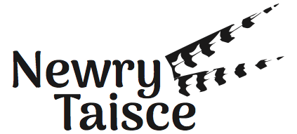

Newry Taisce is a 200 acre private hunting area in Southeast Minnesota located 10 miles east of Interstate 35 just one hour south of the Twin Cities. An upland hunter's paradise, much of the acreage has been in continuous conservation program since 1985.
The terrain includes many constructed ponds, tall and medium height scrub brush, and acres of deep prairie grasses. The well managed property contains numerous evergreen, forbs, and fruit trees. The prairie pothole landscape is loaded with transient and resident wildlife, including deer, pheasants, ducks, geese, and small furs. We look forward to having you come enjoy it!
Discover more about the property by visiting the history page, and learn the location at the directions page. Please contact us if you are interested in making a reservation.
Contact
Please call or email to arrange a time for hunting.
- Phone: +1 (507) 383-8094
- Email: info@newrytaisce.com